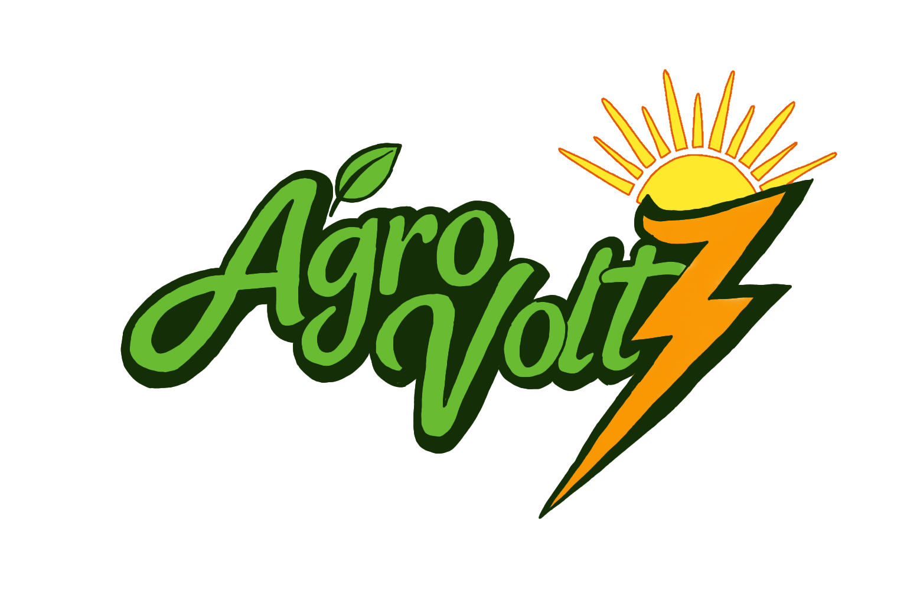

Gira el prototipo, cambia cuánto sol hay y mira cómo el panel y el transformador se turnan para mover la bomba.
Supuestos de la demostración: bomba de 3 W; panel de 6 V y 0,6 A máximo; el Arduino usa primero el panel y el transformador completa lo que falta. La bomba trabaja en ciclos de 6 s encendida y 4 s apagada. Valores referenciales.